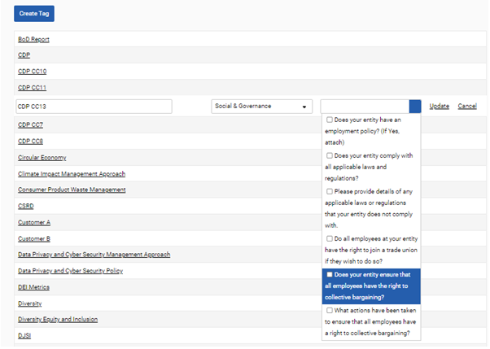
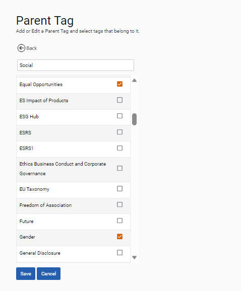

Trends and themes amongst questions can be recorded through tagging functionality. Tags can be used to export responses across multiple questionnaires which share a trend or theme. This is outlined in greater detail in the Questionnaire Export section of this user guide.
Any number of tags can be made against each question. To create a tag, navigate to ‘Frameworks > Settings > Tagging > Tags’ and selecting the “Create Tag” button. To assign a tag to a question, click on the tag and specify the sections and questions to which the tag should be linked with by using the associated dropdowns. Tags can be assigned to questions on the page shown below, in the custom question library, or when creating the question using the import questions functionality.

Tags can be grouped under ‘Parent Tags’, which offer additional analytical capabilities as outlined in the questionnaire export section below. To create a parent tag, navigate to ‘Frameworks > Settings > Tagging > Parent Tags’ and select ‘Add Parent Tag’. Users should specify the name of the Parent Tag and select the tags that should be contained within it.
